O necessário de Wired para montar os eventos do SRC: o que é cada caixa, como resolver os problemas mais comuns e o que fazer antes e depois de um evento. Comece pela aba Comece aqui, leia a aba de cada tipo de caixa e use a aba Problemas comuns quando precisar resolver algo.
Comece aqui
Wired são mobis que fazem o quarto reagir sozinho: levar alguém para um lugar quando ele fala uma palavra, fazer uma esfera correr atrás das pessoas, abrir uma porta com uma alavanca. Não tem código para escrever. Você escolhe as caixas e empilha uma em cima da outra.
Uma pilha junta até quatro tipos de caixa. Cada tipo tem uma aba neste guia, com as caixas mais usadas:
- Ativador Quando a pilha dispara. Ex.: alguém diz "iniciar", alguém usa uma alavanca.
- Condição Só se algo for verdade. É opcional. Ex.: só se quem falou estiver na cadeira do ministrante.
- Efeito O que acontece. Ex.: teleportar, guardar as cadeiras, abrir as portas.
- Seletor Em quem o efeito age. É opcional. Sem ele, o efeito age só em quem disparou; com "Habbos na Área", age em todos dentro de uma área.
- Onde: nos quartos de eventos do grupo, como a [INS/DE²] Sala de Eventos e o [SRC/DE] Eventos.
- Montar é programar. Os wireds de um evento do SRC já ficam no quarto. Montar é configurar as caixas (escrever os comandos, escolher os mobis); desmontar é desprogramar e guardar tudo.
- Pilha é o conjunto de caixas wired empilhadas num mesmo quadrado do piso. Uma pilha é um quadrado só. As caixas da mesma pilha ficam no mesmo quadrado. Caixa fora do quadrado não conversa com as outras.
- O efeito age em quem disparou. Quem diz "iniciar" é quem vai para a área do evento. Pense em quem fala cada comando antes de montar.
- Para configurar uma caixa, dê dois cliques nela. Abre a janela "Mobis Wired". Para escolher mobis, clique neles no quarto com a janela aberta: o mobi ganha um contorno azul e a contagem sobe ("Selecionar Mobi [1/20]"). Termine em Pronto.
Travou? Pergunte no grupo do SRC no WhatsApp. Mande o print da pilha com a caixa aberta e diga o que você esperava que acontecesse.
Abrir a Central do SRCFerramentas para achar e entender wireds
| Comando | Para que serve |
|---|---|
| :furni | Lista os mobis do quarto. Busque "wired" para ver todas as caixas, mesmo escondidas. Clicar num item é como clicar no mobi: abre a janela dele. |
| :wired | Abre as Ferramentas do Criador: quantos wireds o quarto usa, as variáveis, a inspeção e os registros (logs). |
Quer aprender com um evento pronto? Entre no quarto, diga :furni, busque "wired" e abra as caixas uma a uma. É o jeito mais rápido de aprender com o que outra pessoa já montou.
Comandos de todo evento
Os eventos do SRC começam com os mesmos três comandos. Cada um é uma pilha com Habbo diz algo e Teleportar para Mobi.
| Comando | Quem fala e para onde vai |
|---|---|
| iniciar | O participante. Vai para o piso ou a cadeira da área do evento. |
| perdy | Quem perdeu. Vai para os bancos ou sofás de fora da área. |
| ministrarevento | O ministrante. Vai para a cadeira dele. |
- Ativador Habbo diz algo: iniciar
- Efeito Teleportar para Mobi: o piso da área do evento
- Ativador Habbo entra no Quarto
- Efeito Mostrar mensagem: "Seja muito bem-vindo(a) a mais um evento do SRC!"
- Extra Texto Extra de campo: põe o nome de quem entrou ("Olá, fulano!"). Opcional.
Comandos só do ministrante (colocar e guardar esferas, por exemplo) ganham mais uma caixa na pilha: a condição Habbo Ativador está no Mobi com a cadeira do ministrante escolhida. Assim, se um participante falar o comando, nada acontece.
Colocar e guardar mobis
A caixa Mobis que voltam à programação original "fotografa" os mobis escolhidos na hora em que você salva. Quando a pilha dispara, eles voltam para aquela foto. Ela tem duas caixinhas de marcar:
- Atual posição no quarto: o mobi volta para o lugar.
- Atual direção: o mobi volta virado para o mesmo lado.
- Atual estado: o mobi volta ligado ou desligado, como estava.
- Ponha os mobis onde eles devem ficar (as esferas na arena, ligadas; ou as cadeiras guardadas).
- Abra a caixa, escolha os mobis, marque as caixinhas e toque em Pronto.
- Pronto: o comando ou a alavanca daquela pilha leva os mobis de volta para essa posição.
Upar os wireds
Upar é subir os wireds de altura, usando a lajota (um mobi de piso que muda de altura). Para os wireds não atrapalharem o evento, eles ficam em cima dos bares que separam a área do evento do resto do quarto, numa altura alta:
- Ponha os wireds nos bares que dividem a área do evento.
- Coloque uma lajota e suba a altura dela até 30.
- Com a lajota alta, mexa nos wireds por cima dela: eles sobem junto.
Na Sala de Eventos, os wireds também podem ficar numa plataforma separada, fora da área do evento, .
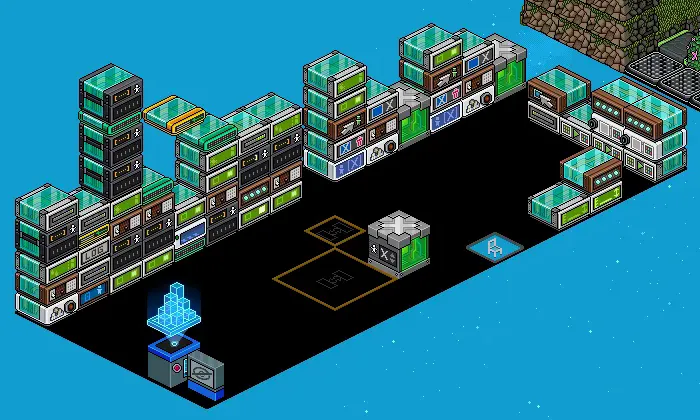
Etapas, prazo e prova
Na Central, a liderança cria a demanda de evento com até três etapas, cada uma com membro e prazo:
| Etapa | O que entregar |
|---|---|
| Construção de evento | O quarto montado. Prova: print do quarto pronto. |
| Programação Wired | As pilhas funcionando. Prova: print das pilhas e do teste. |
| Ministrar evento | O evento no dia marcado. Prova: print do evento. |
Nos eventos da reunião quinzenal, a montagem (print da construção e das wireds) vai até 23h59 da quinta antes da reunião geral. Conclua cada etapa pela Central, com o link do print, como uma função da escala.
Antes do evento: teste
Faça esta lista uns 10 minutos antes de abrir o quarto. Ela também é a prova da etapa Programação Wired na Central: tire o print das pilhas e do teste.
- Fale cada comando (iniciar, perdy, ministrarevento e os do evento) e veja se ele faz o que devia.
- Com uma segunda conta ou um amigo, confira os comandos que mexem em todos (seletor): todos da área vão, não só você.
- Fora da cadeira do ministrante, fale os comandos dele: nada pode acontecer.
- Use o comando ou a alavanca de guardar: os mobis voltam para o lugar.
- Saia e entre no quarto: a mensagem de boas-vindas aparece.
- Os wireds estão upados ou na plataforma separada, fora do caminho dos participantes.
Algo falhou? Veja a tabela de erros comuns na aba Problemas comuns.
Desmontar um evento
Todo evento
Desmontar é desprogramar os wireds e guardar os mobis, para o próximo evento começar do zero.
- Desça os wireds da lajota para um lugar onde dá para mexer neles.
- Abra cada wired e tire todos os mobis escolhidos. Repetir Efeito e Batida não têm o que tirar.
- Apague o texto do Habbo diz algo e do Mostrar mensagem.
- Confira se todos ficaram vazios. Cuidado com o wired lixo: wired guardado com mobi ainda escolhido, que não serve para mais nada.
- Diga abrirc e guarde os mobis nos lugares deles, usando lajotas.
- Diga fecharc e tire o print do evento desmontado.
- Conclua pela Central com o link do print. O print não vai mais para o tópico "[SRC] Escala & Diário de Funções".
Desenho da janela de um wired vazio: nenhum mobi escolhido ([0/20]). É assim que cada caixa fica antes de guardar.
Algo não funcionou?
Procure o sintoma na tabela. Se não achar, veja os exemplos logo abaixo.
| O que acontece | Causa e conserto |
|---|---|
| A pilha não dispara | Alguma caixa está fora do quadrado. Empilhe tudo no mesmo quadrado. |
| Só quem falou é teleportado | Falta o seletor, ou o Teleportar não está em "Usar usuários do seletor". |
| Qualquer um usa o comando | Falta a condição Habbo Ativador está no Mobi com a cadeira do ministrante. |
| O comando dispara com outra frase | O Habbo diz algo está em "Contém palavra-chave". Troque para Combinação exata. |
| Os efeitos saem fora de ordem | Sem extra, a ordem não é garantida. Acrescente Executa na Ordem. |
| O comando dispara várias vezes | Acrescente o extra Limite de Execução. |
| Wired "lixo" no próximo evento | Caixa guardada com mobi ainda escolhido. Desprograme antes de guardar (veja Desmontar). |
Problemas comuns e como resolver
Exemplos prontos para situações que aparecem em quase todo evento. Leia o que precisar, na ordem que quiser: cada um mostra a pilha que resolve e como conferir. Adapte os mobis e as palavras ao seu evento.
1. Um mobi precisa ligar outro
O problema: mexer numa alavanca ou num botão tem que abrir uma passagem, acender um letreiro ou ligar o cronômetro.
Como resolver:
- Separe uma lâmpada e um mobi para ser o botão.
- Ponha um Mobi é usado e clique no botão para escolhê-lo.
- Em cima, no mesmo quadrado, ponha um Mudar estado do Mobi e escolha a lâmpada.
- Ativador Mobi é usado: o botão
- Efeito Mudar estado do Mobi: a lâmpada
Para conferir: dois cliques no botão acendem a lâmpada; mais dois apagam.
2. Um comando que só o ministrante pode usar
O problema: se um participante falar a palavra do comando, nada pode acontecer, e ninguém deve ver a palavra no chat.
Como resolver:
- Escolha um púlpito (ou cadeira) para o ministrante.
- Ponha um Habbo diz algo com a palavra. Marque Combinação exata e Ocultar a mensagem do gatilho.
- Junte Habbo Ativador está no Mobi apontando para o púlpito.
- Feche com Mudar estado do Mobi na lâmpada.
- Ativador Habbo diz algo: a palavra, oculta
- Condição Habbo Ativador está no Mobi: o púlpito
- Efeito Mudar estado do Mobi: a lâmpada
Para conferir: falada fora do púlpito, a palavra não faz nada; no púlpito, funciona e não aparece no chat.
3. Mostrar as regras e só liberar quem está pronto
O problema: quem chega precisa ler as regras antes de ir para o jogo.
Como resolver:
- Separe um piso de entrada e, longe dele, um piso de largada.
- Primeira pilha: Habbo anda no Mobi no piso de entrada e Mostrar mensagem com as regras e o aviso "diga pronto para começar".
- Segunda pilha, noutro quadrado: Habbo diz algo com pronto, Habbo Ativador está no Mobi no piso de entrada e Teleportar para Mobi na largada.
- Ativador Habbo anda no Mobi: o piso de entrada
- Efeito Mostrar mensagem: as regras
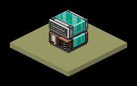
- Ativador Habbo diz algo: pronto
- Condição Habbo Ativador está no Mobi: o piso de entrada
- Efeito Teleportar para Mobi: a largada
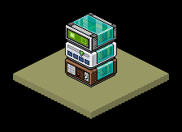
Para conferir: pisar na entrada mostra as regras; "pronto" dito ali leva à largada, e dito em outro lugar não faz nada.
4. Arrumar o quarto de uma vez depois da rodada
O problema: no fim de cada rodada, os mobis estão fora do lugar, e arrumar um por um toma tempo.
Como resolver:
- Deixe as cadeiras do jeito certo e ponha uma alavanca.
- Primeira pilha: Habbo clica no Mobi numa cadeira e Mover Mobi a Mobi levando ela até um piso do palco.
- Segunda pilha: Mobi é usado na alavanca e Mobis que voltam à programação original nas cadeiras, com "Atual posição no quarto" e "Atual direção" marcados. Salve com tudo arrumado.
- Ativador Habbo clica no Mobi: a cadeira
- Efeito Mover Mobi a Mobi: a cadeira vai ao palco
- Ativador Mobi é usado: a alavanca
- Efeito Mobis que voltam à programação original: as cadeiras
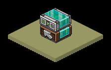
Para conferir: a cadeira clicada vai ao palco; a alavanca devolve todas ao lugar, viradas do jeito certo.
5. Lembrar quem está no jogo
O problema: só quem se inscreveu pode entrar na arena. O Wired guarda isso numa variável, uma etiqueta presa em cada pessoa.
Como resolver:
- Ponha o wired Variável: Usuário e dê o nome inscrito.
- "quero jogar" (Habbo diz algo) com Dar Variável inscrito.
- "desisto" (Habbo diz algo) com Remover Variável inscrito.
- Um piso na frente da arena (Habbo anda no Mobi) com a condição Tem Variável inscrito e Teleportar para Mobi na arena.
- Ativador Habbo anda no Mobi: o piso na frente da arena
- Condição Tem Variável: inscrito
- Efeito Teleportar para Mobi: a arena
Para conferir: o piso leva à arena só quem disse "quero jogar", e para de levar depois do "desisto". Quer ver quem está inscrito? Diga :wired e abra a aba Variables.
6. Levar todo mundo de um lugar para outro
O problema: o ministrante precisa mandar todos os participantes para a arena (ou para fora) com uma palavra só. É o comando que mais aparece nos eventos do SRC.
Como resolver:
- Comece como no exemplo 2: uma palavra (ex.: todos) com a trava do púlpito.
- Junte um Seletor Habbos na Área: toque em Selecione a área e arraste por cima de onde o pessoal fica.
- Feche com Teleportar para Mobi no destino e, em Mostrar configurações avançadas, escolha Usar usuários do seletor.
- Ativador Habbo diz algo: todos
- Condição Habbo Ativador está no Mobi: o púlpito
- Seletor Habbos na Área: onde o pessoal fica
- Efeito Teleportar para Mobi: o destino, com "Usar usuários do seletor"
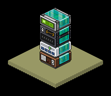
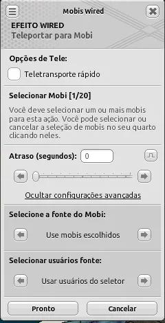
Para conferir: com um amigo (ou sua segunda conta) dentro da área, fale do púlpito: ele vai junto. Só você foi? Faltou o "Usar usuários do seletor".
Não funcionou? A tabela do topo desta aba resolve a maioria dos casos. Se não resolver, mande o print da pilha aberta no grupo do SRC no WhatsApp.
Ativadores: quando a pilha dispara
Toda pilha começa com um ativador. Ele é o "quando": alguém fala, pisa, clica, entra no quarto, ou o tempo passa. A pilha tem um ativador só; para dois gatilhos diferentes, faça duas pilhas.
Quem disparou o ativador é o "usuário acionador". Sem seletor, os efeitos agem nele.
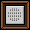
Habbo diz algo Usado no SRCDispara quando alguém fala a palavra ou frase configurada. É a caixa dos comandos.
Atenção: use Combinação exata nos comandos. Em "Contém palavra-chave", uma frase qualquer que tenha a palavra também dispara.
Como configurar e exemplo
Na janela: "O que é dito"; o tipo (Contém palavra-chave, Combinação exata ou Concordar com todo o texto); Ocultar a mensagem do gatilho; Somente o proprietário da sala pode acionar.
Exemplo: o comando iniciar do ministrante.
Mobi é usado Usado no SRC
Dispara quando alguém usa o mobi escolhido: dois cliques rápidos, ou "usar" nas informações do mobi.
Como configurar e exemplo
Na janela: escolha os mobis (por exemplo, uma alavanca).
Exemplo: a alavanca do ministrante que guarda as cadeiras ou abre as portas.
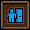
Habbo entra no Quarto Usado no SRCDispara quando alguém entra no quarto. Não tem nada para configurar.
Como configurar e exemplo
Exemplo: a mensagem de boas-vindas do evento.
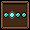
Repetir Efeito Usado no SRCDispara sozinho, de tempos em tempos, sem ninguém fazer nada.
Atenção: intervalo muito curto com muitos efeitos deixa o quarto lento.
Como configurar e exemplo
Na janela: o intervalo, de meio segundo a 60 segundos.
Exemplo: fazer esferas andarem pela arena o tempo todo.
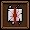
Batida Usado no SRCDispara quando um mobi que anda com Perseguir (ou Mudar Direção do Mobi) bate em alguém. Quem levou a batida é o acionador.
Como configurar e exemplo
Na janela: nada para configurar.
Exemplo: a esfera bateu, o participante vai para os bancos de fora.
Outras caixas (4)
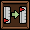
Habbo anda no MobiDispara quando alguém pisa ou senta num dos mobis escolhidos.
Como configurar e exemplo
Na janela: escolha até 20 mobis clicando neles no quarto.
Exemplo: um piso de resposta, a linha de chegada, uma poltrona.
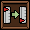
Habbo sai do MobiDispara quando alguém sai de cima de um dos mobis escolhidos.
Como configurar e exemplo
Na janela: escolha os mobis.
Exemplo: quem levantar da cadeira antes da hora recebe um aviso.
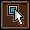
Habbo clica no MobiDispara com um clique simples no mobi, sem precisar de dois cliques.
Como configurar e exemplo
Na janela: escolha os mobis.
Exemplo: um botão que o participante aperta para responder.
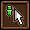
Usuário clica em UsuárioDispara quando alguém clica em outro avatar.
Como configurar e exemplo
Na janela: Não abrir o menu do avatar e Não gire, para o clique não abrir o menu nem virar o boneco.
Exemplo: o ministrante clica no participante que vai ser eliminado ou salvo.
Como é a janela de uma caixa
Desenho da janela do jogo, com os campos dela. Use Combinação exata para só a palavra inteira valer.
Condições: só se
A condição é opcional. Ela confere algo antes dos efeitos rodarem; se não passar, nada acontece. Com várias condições na pilha, todas precisam passar (para "basta uma", veja o extra Pelo menos uma condição é verdadeira, na aba Extras).
Toda condição tem uma irmã negativa, que confere o contrário. Ex.: "Não é membro do grupo".
Habbo Ativador está no Mobi Usado no SRC
Só passa se quem disparou estiver em cima de um dos mobis escolhidos.
Como configurar e exemplo
Na janela: escolha os mobis.
Exemplo: a trava do ministrante: o comando só funciona para quem está sentado na cadeira dele.
Estado e Posição do Mobi combinam Usado no SRC
Só passa se os mobis escolhidos estiverem como estavam na hora em que você salvou a caixa (posição e estado).
Como configurar e exemplo
Na janela: arrume os mobis como devem estar, escolha-os e salve.
Exemplo: o comando só funciona se a alavanca estiver ligada.
Mobis com Habbos Usado no SRC
Só passa se todos os mobis escolhidos tiverem alguém em cima.
Como configurar e exemplo
Na janela: escolha os mobis.
Exemplo: a rodada só começa quando todas as cadeiras estão ocupadas.
Membro do Grupo Usado no SRC
Só passa se quem disparou for membro do grupo do quarto.
Como configurar e exemplo
Exemplo: um comando que só membros do grupo do SRC podem usar.
Outras caixas (3)
Membro da Equipe
Só passa se quem disparou estiver na equipe configurada (as equipes de jogo do Habbo).
Como configurar e exemplo
Na janela: escolha a equipe.
Exemplo: só a equipe vermelha marca ponto naquela chegada.
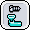
Usuário tem item de mãoSó passa se quem disparou estiver segurando o item de mão configurado (bebida, comida etc.).
Como configurar e exemplo
Na janela: escolha o item.
Exemplo: só entra quem pegou o item no frigobar.
Número de usuários no quarto
Só passa se o número de pessoas no quarto estiver entre o mínimo e o máximo configurados.
Como configurar e exemplo
Na janela: o mínimo e o máximo.
Exemplo: o evento só começa com pelo menos 5 pessoas.
Efeitos: o que acontece
O efeito é o "então". Uma pilha pode ter vários efeitos. Sem o extra Executa na Ordem, a ordem entre eles não é garantida.
Todo efeito tem Atraso (segundos), para acontecer um pouco depois. Muitos têm Mostrar configurações avançadas, onde se escolhe em quem ele age: no usuário acionador ou nos usuários do seletor.
Mostrar mensagem Usado no SRC
Mostra uma mensagem para quem disparou a pilha.
Como configurar e exemplo
Na janela: "Mensagem", Visibilidade da mensagem, Estilo de notificação e o atraso.
Exemplo: as boas-vindas, ou "Você está imune nesta rodada".
Teleportar para Mobi Usado no SRC
Leva a pessoa até o mobi escolhido. Com vários mobis escolhidos, ela vai para um deles, sorteado.
Como configurar e exemplo
Na janela: escolha o destino; Teletransporte rápido; nas avançadas, "Selecionar usuários fonte" (o acionador ou Usar usuários do seletor).
Exemplo: os comandos iniciar e perdy; com um seletor, leva todos de uma área.
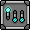
Mudar estado do Mobi Usado no SRCMuda o estado do mobi como se alguém desse dois cliques nele.
Como configurar e exemplo
Na janela: escolha os mobis; "Alterar para o próximo estado" faz cada uso passar para o estado seguinte.
Exemplo: abrir o portão, acender uma lâmpada, ligar o cronômetro.
Mobis que voltam à programação original Usado no SRC
Põe os mobis escolhidos de volta como estavam quando você salvou a caixa.
Como configurar e exemplo
Na janela: escolha os mobis e marque o que volta: "Atual estado", "Atual direção" e "Atual posição no quarto".
Exemplo: guardar as cadeiras ou recolocar as esferas na arena.
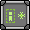
Congelar Habbo Usado no SRCPrende a pessoa no lugar. Ela não consegue andar até ser descongelada.
Atenção: congelar não impede que outro wired mova a pessoa (teleporte, por exemplo).
Como configurar e exemplo
Na janela: o efeito visual (Wired Freeze, Congelado, Raio-x, Passarinhos ou Armadilha); nas avançadas, em quem age.
Exemplo: segurar todos parados entre uma rodada e outra.
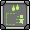
Descongelar Habbo Usado no SRCSolta quem estava congelado.
Como configurar e exemplo
Na janela: nas avançadas, em quem age.
Exemplo: o comando que libera os participantes para a próxima rodada.
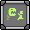
Perseguir Usado no SRCFaz o mobi andar até a pessoa mais próxima na mesma linha ou coluna. Quando encosta, dispara a Batida.
Como configurar e exemplo
Na janela: escolha os mobis que perseguem.
Exemplo: esferas que correm atrás dos participantes.
Mover e Rotacionar Mobi Usado no SRC
Move e gira os mobis escolhidos.
Como configurar e exemplo
Na janela: a direção do movimento (inclusive para qualquer lado) e o giro.
Exemplo: esferas que andam soltas pela arena. Sozinho não causa Batida.
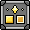
Definir Realce Usado no SRCDestaca um mobi ou um usuário no quarto.
Como configurar e exemplo
Na janela: o tipo de realce, a intensidade e, em alguns tipos, a cor.
Exemplo: destacar quem está imune.
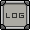
Escrever nos logs Usado no SRCGrava uma mensagem nos registros de Wired do quarto. Não aparece para os participantes.
Como configurar e exemplo
Na janela: o texto.
Exemplo: registrar quem entrou no evento, para conferir depois em :wired.
Outras caixas (1)
Mover Mobi a Mobi
Leva um mobi até outro mobi.
Como configurar e exemplo
Na janela: escolha os mobis que se movem e os mobis de destino.
Exemplo: clicar numa cadeira e ela ir até o palco.
Seletores: em quem o efeito age
Sem seletor, o efeito age só em quem disparou a pilha. O seletor troca isso: ele escolhe várias pessoas ou mobis na hora, e o efeito age em todos eles.
Para funcionar, o efeito precisa saber que deve usar o seletor: nas configurações avançadas dele, escolha Usar usuários do seletor (ou "Usar mobis do seletor").
Opções comuns aos seletores: Filtrar seleção existente (junta com o que outro seletor já pegou) e Inverter (pega quem está fora).
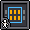
Habbos na Área Usado no SRCSeleciona todo mundo que está dentro de uma área do quarto.
Como configurar e exemplo
Na janela: Selecione a área e arraste no quarto; Limpar apaga a área.
Exemplo: um comando que leva todos da arena para os bancos de uma vez.
Outras caixas (4)
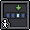
Habbos no MobiSeleciona quem está em cima dos mobis escolhidos.
Como configurar e exemplo
Na janela: escolha os mobis.
Exemplo: todos que estão nas poltronas vermelhas perdem.
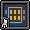
Mobi na ÁreaSeleciona os mobis que estão dentro de uma área.
Como configurar e exemplo
Na janela: selecione a área.
Exemplo: ligar todas as lâmpadas de uma área sem escolher uma por uma.
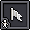
Habbos na EquipeSeleciona quem está na equipe configurada.
Como configurar e exemplo
Na janela: escolha a equipe.
Exemplo: teleportar a equipe azul inteira.
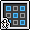
Filtro: Quantidade de UsuáriosNão seleciona sozinho: reduz a seleção de outro seletor a uma quantidade.
Como configurar e exemplo
Na janela: a quantidade.
Exemplo: da área toda, pegar só uma pessoa.
Variáveis: marcar quem é quem
Uma variável é uma informação que o Wired guarda e depois confere ou muda. Pense numa etiqueta com um valor: "imune", "vidas = 3", "pontos = 10".
Os tipos dizem onde a etiqueta fica:
| Tipo | Onde fica |
|---|---|
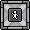 Usuário | Em cada pessoa, com um valor para cada uma. Ex.: quem está imune. Usado no SRC |
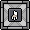 Mobi | Em cada mobi. Ex.: quantas vezes um botão foi apertado. |
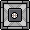 Global | Uma só para o quarto. Ex.: número da rodada. |
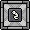 Contexto | Só durante a execução da pilha; some quando ela termina. |
Primeiro crie a variável: ponha o wired do tipo (por exemplo, Wired Variável: Usuário) no quarto e dê um nome a ela. Depois use as caixas abaixo. Para ver as variáveis do quarto, diga :wired e abra a aba Variables.
Dar Variável Usado no SRC
Efeito: põe a variável, com o valor configurado, em quem disparou (ou nos usuários do seletor).
Como configurar e exemplo
Na janela: a variável e o valor.
Exemplo: quem pisou no piso azul ganha "imune".
Remover Variável Usado no SRC
Efeito: tira a variável.
Como configurar e exemplo
Na janela: a variável.
Exemplo: no começo de cada rodada, tirar "imune" de todos.
Tem Variável Usado no SRC
Condição: só passa se quem disparou tiver a variável.
Como configurar e exemplo
Na janela: a variável. A versão negativa confere quem não tem.
Exemplo: o comando de eliminar não funciona em quem tem "imune".
Outras caixas (4)
Mudar Valor Variável
Efeito: altera o valor de uma variável (somar, diminuir, trocar).
Como configurar e exemplo
Na janela: a variável e a conta.
Exemplo: quem errou perde uma vida.
Valor Variável
Condição: só passa se o valor da variável bater com o configurado.
Como configurar e exemplo
Na janela: a variável, a comparação e o valor.
Exemplo: só quem tem 3 pontos ou mais avança.
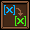
Variável MudouAtivador: dispara quando uma variável é criada, alterada ou removida.
Como configurar e exemplo
Na janela: escolha a variável.
Exemplo: quando as vidas chegam a zero, a pessoa sai do jogo.
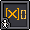
Usuários com VariávelSeletor: pega todos que têm a variável.
Como configurar e exemplo
Na janela: a variável.
Exemplo: levar todos os "imunes" de volta ao jogo.
Para praticar: o exemplo 5 da aba Problemas comuns monta uma variável do começo ao fim.
Extras: ajustes da pilha
O extra não é ativador, condição nem efeito. Ele muda o jeito como a pilha funciona. Vai no mesmo quadrado, junto com as outras caixas.
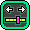
Limite de Execução Usado no SRCLimita quantas vezes a pilha pode rodar num intervalo de tempo.
Como configurar e exemplo
Na janela: quantas vezes e em quanto tempo.
Exemplo: impedir que alguém repita o comando várias vezes seguidas.
Texto Extra: Campo Nome de Usuário Usado no SRC
Põe o nome de um usuário dentro do texto de outro wired (por exemplo, no Mostrar mensagem).
Como configurar e exemplo
Exemplo: "Olá, fulano! Seja bem-vindo(a)".
Outras caixas (4)
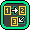
Executa na OrdemFaz os efeitos rodarem na ordem em que estão empilhados, de baixo para cima.
Como configurar e exemplo
Exemplo: primeiro guardar os mobis, depois acender a lâmpada certa.
Pelo menos uma condição é verdadeira
Troca o "todas as condições" por "basta uma" (ou uma quantidade configurada).
Como configurar e exemplo
Na janela: quantas condições precisam passar.
Exemplo: o comando funciona para quem está na cadeira ou é membro do grupo.
Efeito Aleatório
Com ele, só um dos efeitos da pilha roda por vez, sorteado.
Como configurar e exemplo
Exemplo: sortear para qual lado a esfera vai.
Efeito Inédito
Também roda só um efeito por vez, como o Aleatório.